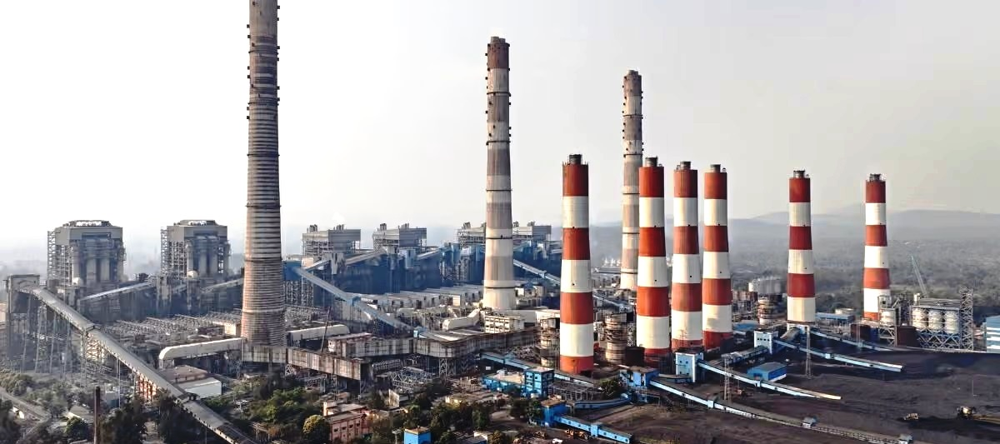
Source
Source of Fly Ash
Dry ash is drawn from the electrostatic precipitator hoppers of the thermal station, kept apart from bottom ash and pond ash from the moment it is collected.

Product Catalog · HSN 26219000
Fly ash in both classified grades, plus bottom ash, pond ash and zinc ash. Every grade is separated at source and tested before dispatch.
The Catalog
Fly ash and zinc ash are exported worldwide. The rest of the book is traded within India. Everything is listed below — jump to a category or keep scrolling.
01 · Export
The fine, powder-like residue left when pulverised coal is burned in a thermal power station — a grey amorphous powder, rich in silica and alumina and spherical in shape. Its properties vary with the coal burned and the efficiency of combustion, which is why we classify every consignment rather than ship it as raw ash.

Dry ash is drawn from the electrostatic precipitator hoppers of the thermal station, kept apart from bottom ash and pond ash from the moment it is collected.

From older, harder coals. Low in calcium and rich in silica and alumina; pozzolanic, so it needs a cementing agent to react. Suited to structural concrete in coastal or sulphate-rich conditions.
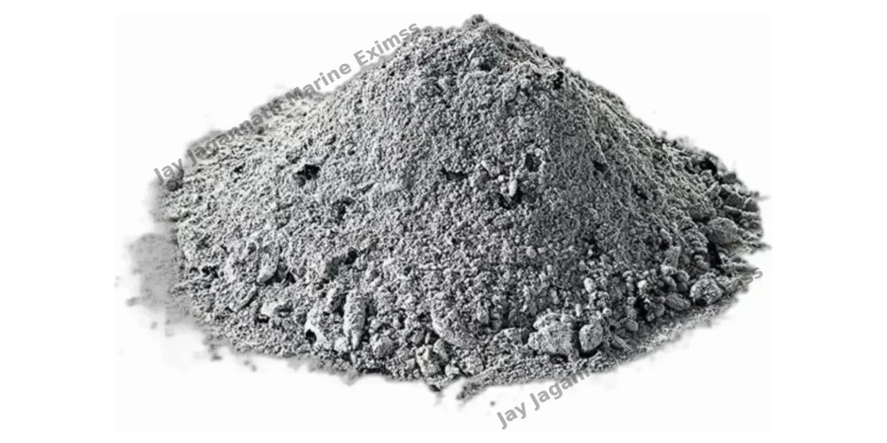
From younger, softer coals. Higher in calcium and containing free lime, so it is both pozzolanic and self-cementing. Suited to rapid construction and road base stabilisation.
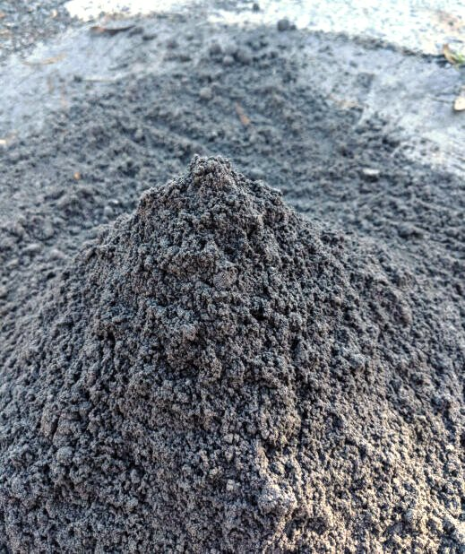
The coarse, heavier particles collected at the bottom of the boiler furnace. Higher in unburnt carbon, with no pozzolanic property, so it is supplied as a separate grade.
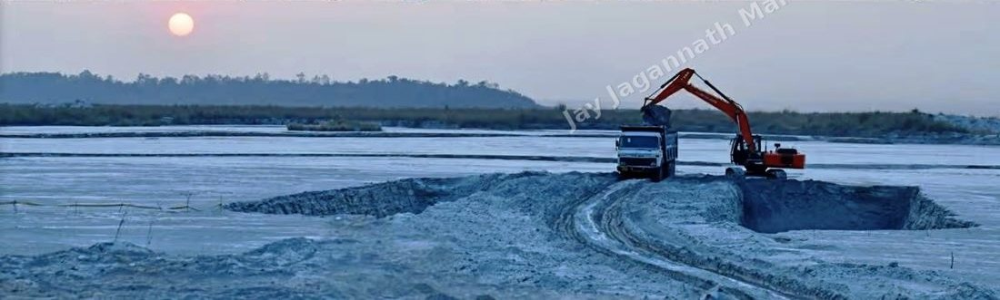
Fly ash and bottom ash carried as slurry to the ash dyke and recovered from there for bulk civil work — land fill, mine fill and road laying.
The international testing standards our fly ash is graded against. A test certificate is issued against the lot before despatch.
02 · Export
A powdery byproduct formed on the surface of molten zinc during hot-dip galvanisation and metal smelting — metallic zinc particles, zinc oxide and trace impurities.
Exported alongside fly ash, and stocked under cover so a consignment can be drawn against at short notice.
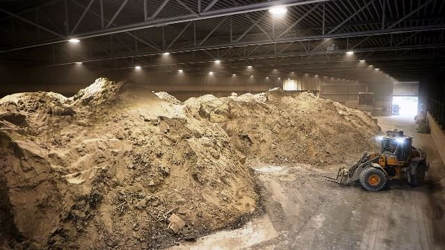
03 · Domestic
Traded within the domestic market and moved on the same sourcing and haulage the export side is built on. Grade and quantity are confirmed against your enquiry.
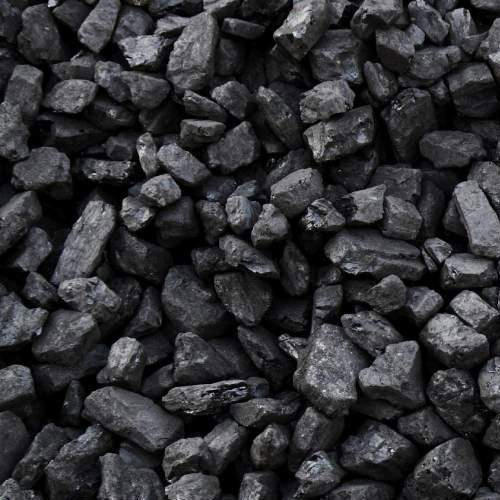
Thermal and industrial grades, supplied to specification.
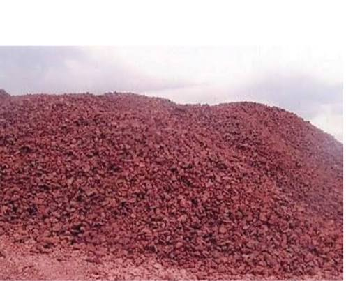
Lumps and fines out of Odisha’s ore belt.
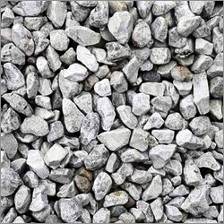
Crushed and sized for cement, steel and construction use.
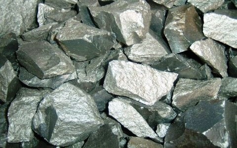
Ore for ferro-alloy and steel making.
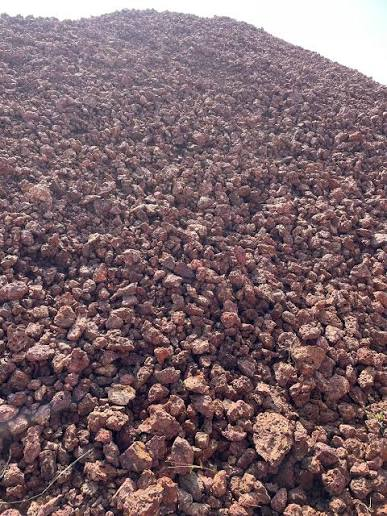
Ore for alumina, refractory and abrasive use.
04 · Domestic
Vegetables, fruit and marine, traded within India on the sourcing and haulage the export book already runs on. All of it follows a season, so variety, pack and quantity are settled against each enquiry.
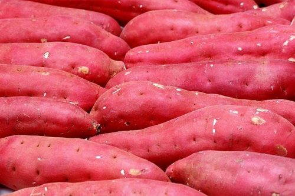
Odisha grows close to a third of India’s crop — more than any other state. Red-skinned, cured after lifting so it travels without scuffing.
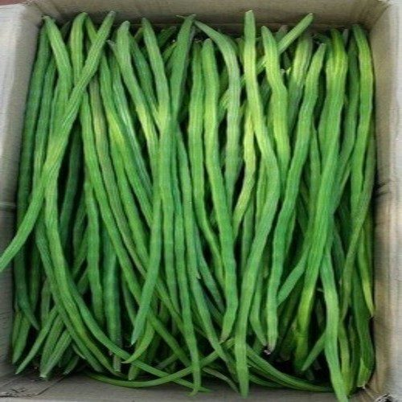
Moringa pods cut young, while they still snap rather than bend — soft flesh, before the fibre sets.
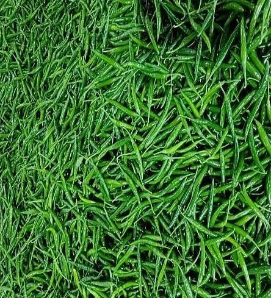
Picked green and firm, at full pungency. Chilli loses more to delay than it does to distance, so a lot is despatched, not held.
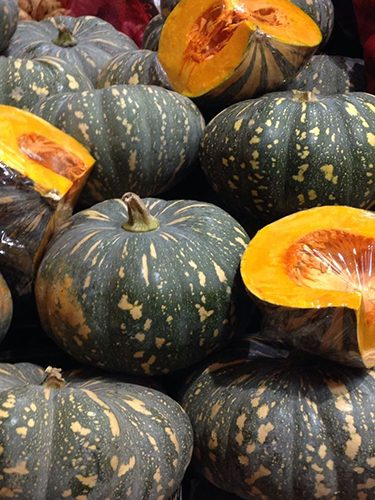
Hard green skin, deep orange flesh. Cured whole it holds for weeks at ambient temperature — one of the few that moves without a cold chain.
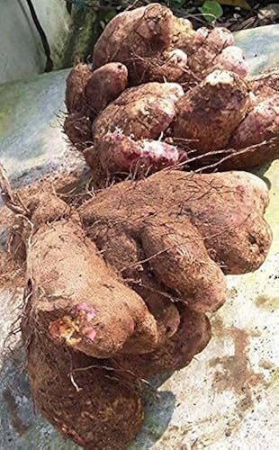
Elephant foot yam, lifted heavy and rough-skinned. Dense, with little on it to bruise, so it moves in bulk.
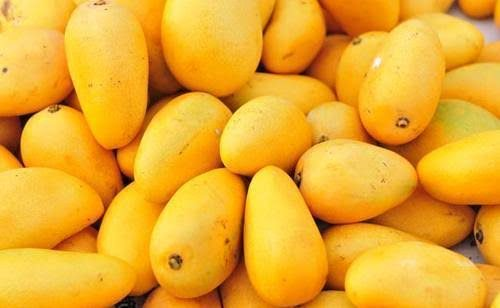
Grown across all thirty districts of the state — Amrapali, Dasheri, Langra, Totapuri. Cut at colour break so it ripens on the way, not on the tree.
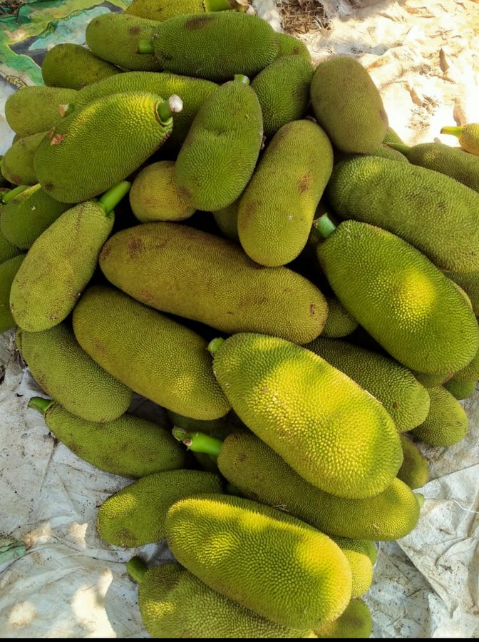
The heaviest fruit on the list and the least fragile — thick rind, and it travels whole.
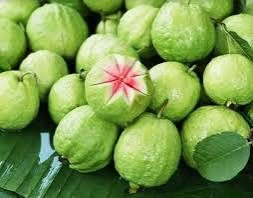
Firm, thin-skinned, picked hard before the flesh gives. Two crops a year rather than one.
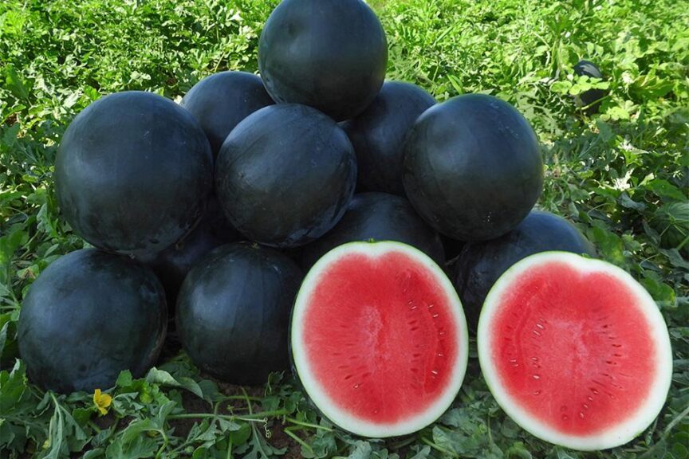
Dark-rind summer melon, cut with the stalk left on. Heavy, cheap to grow, and it moves by the truckload.
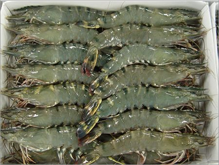
Penaeus monodon, the black tiger. Sorted by count per kilo and iced at landing.
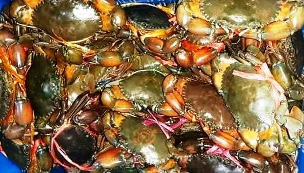
Scylla serrata out of the brackish water — claws tied, sold live and kept that way. Chilika is the crab ground.
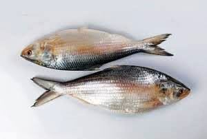
Hilsa, and a season that opens and shuts with the rain — the fish runs up the Mahanadi to spawn, and the boats follow it.
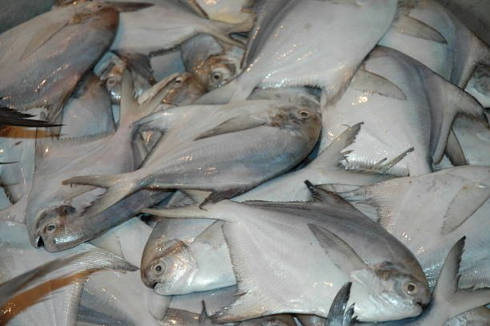
Silver pomfret — flat, firm-fleshed, and sorted piece by piece rather than by the box.
Where It Goes
Send us the product, tonnage and discharge port. We respond with a firm price, packing detail and the shipment window available.